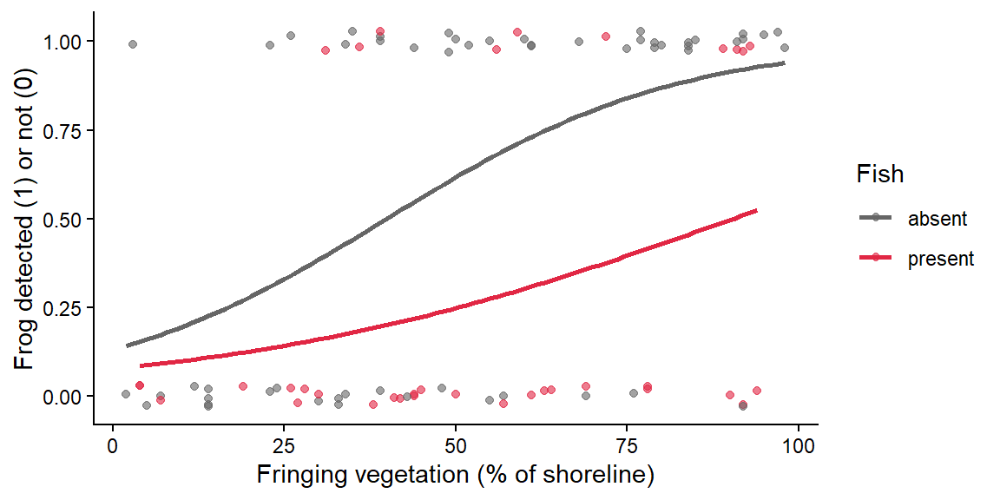
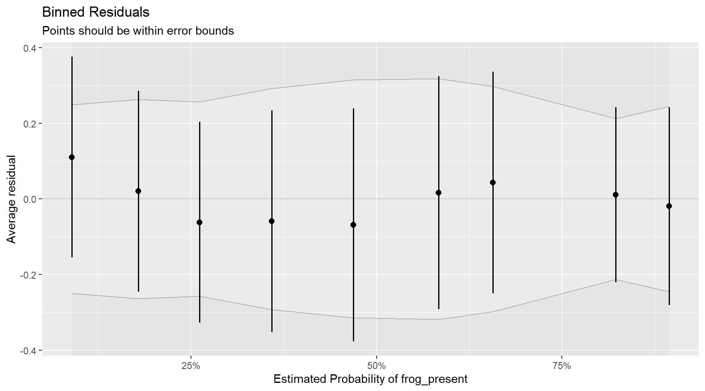
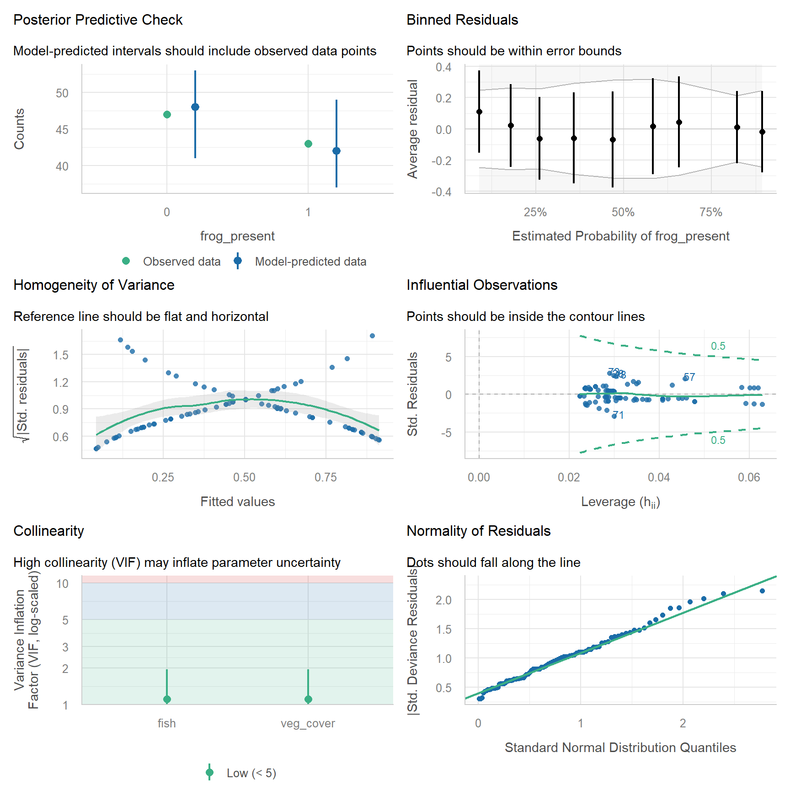
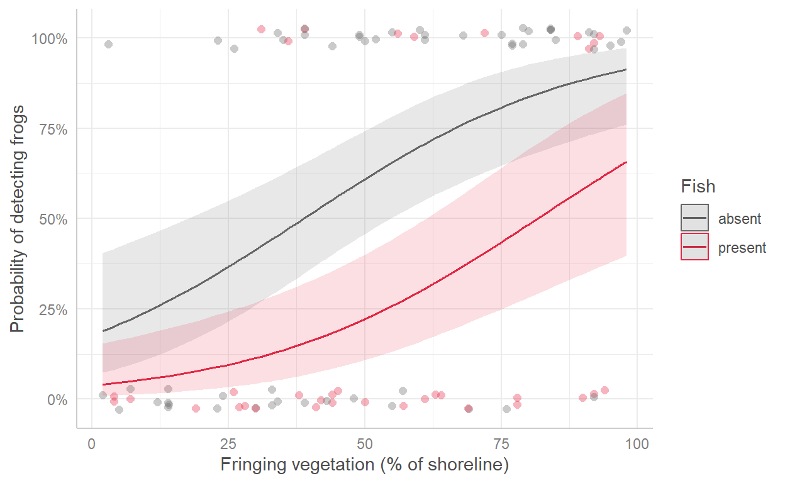

Week 11: Logistic regression for presence/absence, alive/dead and other yes/no responses
Many ecological questions have a yes/no answer. Is the species present at this site? Did the seedling survive? Did the coral bleach? Did the bird nest successfully? This week you will model these binary responses with logistic regression, a GLM with a binomial distribution and a logit link. It works the same way as the count GLMs from Week 8. Workshop materials are available in the GitHub repository ECS200.
TipLearning outcomes
By the end of this workshop you should be able to:
Explain why a binary response needs logistic regression, and what probability, odds and the logit link are.
Fit and check a logistic regression in R.
Turn coefficients into odds ratios and predicted probabilities.
# Week 11 workshop - GLMs for binary data# Written by Nicholas Wu, 1234578, 06/05/2027library(tidyverse) # data import, wrangling and plottinglibrary(performance) # checking model assumptionslibrary(see) # draws the plots for performancelibrary(ggeffects) # predictions from models for plotting# setwd("C:/Users/YOUR-NAME/Documents/ECS200")
Study context
Farm dams can be important breeding habitat for frogs, but only if they are suitable. Fringing vegetation provides shelter and calling sites, while introduced fish such as mosquitofish (Gambusia holbrooki) eat eggs and tadpoles.
In spring, 90 farm dams were surveyed once at night for a calling tree frog. For each dam, the survey recorded whether the frog was detected (1) or not (0), the percentage of the shoreline with fringing vegetation, and whether fish were present.
Question: Is frog occurrence related to fringing vegetation and the presence of fish?
# How many dams had frogs?frog_data %>% dplyr::count(frog_present)
# A tibble: 2 × 2
frog_present n
<dbl> <int>
1 0 47
2 1 43
1. Background
Probability and odds
For a binary response we model the probability (p) that the outcome is 1 (e.g. that the frog is present). Probabilities are stuck between 0 and 1, so a straight line does not work: it will eventually predict probabilities below 0 or above 1. Instead, logistic regression models the log-odds:
Odds compare the chance of “yes” with the chance of “no”. p = 0.5 gives odds of 1 (1:1), p = 0.8 gives odds of 4 (4:1).
The logit link, log(odds), turns a probability between 0 and 1 into a number between −∞ and +∞, so a straight line is fine on that scale.
On the probability scale the line becomes an S-shaped curve that never goes below 0 or above 1.
\(e^{\beta_1}\) is the odds ratio: how much the odds are multiplied for every one-unit increase in x. An odds ratio > 1 means p increases with x, < 1 means it decreases, and 1 means no effect.
The response follows a binomial distribution (for 0/1 data, also called the Bernoulli distribution), so in R we use glm(..., family = binomial).
Use the app to see how the intercept and slope control the S-curve, and why a straight line (lm()) fails for binary data.
viewof lg_b0 = Inputs.range([-6,6], {value:-2.5,step:0.1,label:"Intercept β₀ (log-odds when x = 0)"})viewof lg_b1 = Inputs.range([-0.15,0.15], {value:0.06,step:0.005,label:"Slope β₁ (change in log-odds per unit of x)"})viewof lg_lm = Inputs.toggle({label:"Also show a straight line (lm)",value:false})viewof lg_seed = Inputs.button("Resample")
Code
lg_data = {const r =rng(1111+ lg_seed);const x =runif(r,80,0,100);const pts = x.map((v) => {const p =logistic(lg_b0 + lg_b1 * v);const y =r() < p ?1:0;return {x: v, y,yj: y + (r() -0.5) *0.06}; });const curve =Array.from({length:101}, (_, i) => ({x: i,p:logistic(lg_b0 + lg_b1 * i)}));const fit =lm1(pts.map((d) => d.x), pts.map((d) => d.y));return {pts, curve, fit};}Plot.plot({width:560,height:320,marginLeft:50,x: {label:"Predictor x (e.g. vegetation cover, %)",domain: [0,100]},y: {label:"Probability of presence",domain: [-0.25,1.25],ticks: [0,0.25,0.5,0.75,1],tickFormat:".2f",grid:true},marks: [ Plot.ruleY([0,1], {stroke: dark}), Plot.dot(lg_data.pts, {x:"x",y:"yj",fill: grey,fillOpacity:0.6,r:3}), Plot.line(lg_data.curve, {x:"x",y:"p",stroke: red,strokeWidth:3}), lg_lm ? Plot.line([[0, lg_data.fit.b0], [100, lg_data.fit.b0+100* lg_data.fit.b1]], {stroke: blue,strokeWidth:2.5,strokeDasharray:"6,4"}) :null ]})
Code
html`<div class="app-verdict">Odds ratio for a 1-unit increase in x = e<sup>β₁</sup> = <b>${fmt(Math.exp(lg_b1),3)}</b>(for a 10-unit increase: <b>${fmt(Math.exp(10* lg_b1),2)}</b>). Probability at x = 0: <b>${fmt(logistic(lg_b0))}</b>; at x = 100: <b>${fmt(logistic(lg_b0 +100* lg_b1))}</b>.${lg_lm ?"The dashed blue straight line predicts impossible probabilities below 0 or above 1 at the ends.":"Grey dots are the observed 0s and 1s (spread slightly so you can see them); the red curve is the true probability."}</div>`
2. Visualise
Binary data are hard to see on a scatterplot because every point sits at 0 or 1. Two useful plots are the raw 0/1 points with a fitted logistic curve on top, and the proportion of 1s in each group.
Code
# Raw 0/1 data (jittered vertically a little) with a logistic curve for each fish groupggplot2::ggplot(frog_data, ggplot2::aes(x = veg_cover, y = frog_present, colour = fish)) + ggplot2::geom_jitter(height =0.03, width =0, alpha =0.6) + ggplot2::geom_smooth(method ="glm", method.args =list(family = binomial), se =FALSE) + ggplot2::scale_colour_manual(values =c("absent"="grey40", "present"="#e12744")) + ggplot2::labs(x ="Fringing vegetation (% of shoreline)", y ="Frog detected (1) or not (0)",colour ="Fish") + ggplot2::theme_classic()

Code
# Proportion of dams with frogs, with and without fishfrog_data %>% dplyr::group_by(fish) %>% dplyr::summarise(n_dams = dplyr::n(),n_frogs =sum(frog_present),prop_frogs =mean(frog_present)) # mean of 0/1 values = proportion of 1s
Frogs were more often detected at dams with more fringing vegetation, and less often at dams with fish.
3. Check assumptions
Residuals from binary data are always strange-looking (every residual comes from a 0 or a 1), so the usual residual plots are not useful. Instead:
Assumption
How to check
Independent observations
Study design: one survey per dam ✅. Repeated surveys of the same dam would need a mixed-effects model (Week 12)
The relationship is linear on the logit scale
Binned residuals: group observations by their fitted value and average the residuals in each bin. Most bins should fall inside the error bounds
Enough data
A rough rule is at least 10 observations of the rarer outcome (0 or 1) for every predictor. Here both outcomes have more than 40 dams, and there are only 2 predictors ✅
Predictors are not strongly correlated
performance::check_collinearity()
Overdispersion cannot happen with 0/1 data, so there is nothing to check for it.
Code
frog_glm <-glm(frog_present ~ veg_cover + fish,family = binomial,data = frog_data)# Binned residuals: points should mostly fall inside the grey boundsplot(performance::binned_residuals(frog_glm))

Code
# All diagnostics togetherperformance::check_model(frog_glm)

The binned residuals fall inside the bounds and the collinearity is low, so the model is appropriate.
WarningWhen is logistic regression NOT appropriate, or not enough? (click to expand)
Situation
What to do
Imperfect detection: a single survey can miss a species that is really there (a false absence)
Survey each site several times and use an occupancy model, which estimates detection and occupancy separately (Specht et al., 2017). Logistic regression then models “detected”, not “present”
Successes out of a known number of trials (e.g. 7 of 20 eggs hatched)
Binomial GLM with cbind(successes, failures) ~ x as the response
A continuous proportion (e.g. % cover)
Beta regression (e.g. glmmTMB package with family = beta_family())
Repeated surveys at the same sites, or sites grouped in regions
Mixed model, lme4::glmer(..., family = binomial) (Week 12)
Warning “fitted probabilities numerically 0 or 1 occurred”
Complete separation: a predictor perfectly predicts the outcome (e.g. all dams with fish have no frogs). Estimates are unreliable, so collect more data or simplify the model
A time until the event happens (e.g. days until death)
Survival analysis (Week 13)
4. Model
Code
summary(frog_glm)
Call:
glm(formula = frog_present ~ veg_cover + fish, family = binomial,
data = frog_data)
Coefficients:
Estimate Std. Error z value Pr(>|z|)
(Intercept) -1.53941 0.56548 -2.722 0.00648 **
veg_cover 0.03970 0.01015 3.910 9.21e-05 ***
fishpresent -1.70076 0.54490 -3.121 0.00180 **
---
Signif. codes: 0 '***' 0.001 '**' 0.01 '*' 0.05 '.' 0.1 ' ' 1
(Dispersion parameter for binomial family taken to be 1)
Null deviance: 124.589 on 89 degrees of freedom
Residual deviance: 96.466 on 87 degrees of freedom
AIC: 102.47
Number of Fisher Scoring iterations: 4
The output gives everything you need:
Coefficients: one row per term.
Estimate: the effect on the log-odds scale. (Intercept) is the log-odds of detecting frogs at a dam with 0% vegetation and no fish (the reference level). veg_cover is the change in log-odds for each 1% more vegetated shoreline. fishpresent is the difference in log-odds between dams with and without fish. A positive estimate means frogs are more likely to be detected, a negative one less likely.
Std. Error: the uncertainty in each estimate.
z value: the estimate divided by its standard error.
Pr(>|z|): the p-value, the probability of an effect this large if the true effect were zero.
Dispersion parameter for binomial family taken to be 1: fixed at 1 for 0/1 data, which is why there is no overdispersion to check.
Null deviance and Residual deviance: how badly a model with no predictors and our model fit the data. The bigger the drop, the more the predictors explain.
AIC: compares models fitted to the same data (lower is better).
Number of Fisher Scoring iterations: how many steps R took to fit the model. You can ignore it unless it is very large (over about 25), which can be a sign of complete separation.
As in Week 8, the coefficients are on the link scale (here log-odds). Back-transform them with exp() to get odds ratios.
Odds ratios are still a bit abstract, so it helps to show predicted probabilities.
Code
frog_pred <- ggeffects::predict_response(frog_glm, terms =c("veg_cover [all]", "fish"))plot(frog_pred, show_data =TRUE, jitter =0.03) + ggplot2::scale_colour_manual(values =c("grey40", "#e12744")) + ggplot2::scale_fill_manual(values =c("grey40", "#e12744")) + ggplot2::labs(title =NULL, x ="Fringing vegetation (% of shoreline)",y ="Probability of detecting frogs", colour ="Fish", fill ="Fish")

Code
# Predicted probability at 10% and 90% vegetation cover, with and without fishggeffects::predict_response(frog_glm, terms =c("veg_cover [10, 90]", "fish"))
Each extra 1% of vegetated shoreline multiplies the odds of detecting frogs by 1.04. For a 10% increase: ×1.49
fishpresent
0.18
0.06–0.51
With fish present, the odds of detecting frogs are 0.18 times the odds without fish, i.e. the odds are reduced by 82%
ImportantOdds are not probabilities
An odds ratio of 0.2 does not mean the probability is 80% lower. The change in probability depends on where you are on the S-curve. That is why it is good practice to also report predicted probabilities, as in the results sentence below.
Methods sentence: Frog detection (detected/not detected) was modelled with a binomial generalised linear model (logistic regression) using the glm() function in R, with fringing vegetation cover and fish presence as predictors. Model fit was assessed with binned residuals using the performance::binned_residuals() function. Significance was set at α = 0.05.
Results sentence:
The probability of detecting frogs increased with fringing vegetation (odds ratio = 1.04 per 1% cover, 95% CI 1.021–1.063, p < 0.001) and was lower at dams with fish (odds ratio = 0.18, 95% CI 0.06–0.51, p < 0.001; Fig. 1). At dams without fish, the predicted probability of detecting frogs rose from 0.24 at 10% vegetation cover to 0.88 at 90% cover, whereas at dams with fish it rose from 0.06 to 0.58. Because each dam was surveyed once, these are probabilities of detection, which may underestimate true occupancy.
Coral bleaching after a marine heatwave. Heat stress on coral reefs is measured as degree heating weeks (DHW): how much, and for how long, the water was warmer than the usual summer maximum. NOAA warns that significant bleaching is likely above 4 DHW and severe bleaching above 8 DHW. After a marine heatwave, divers recorded whether 150 tagged coral colonies were bleached (1) or not (0), together with the heat stress at each colony’s location (dhw) and the colony’s depth (depth_m).
Import the data and check its structure. How many colonies bleached?
Plot the bleaching data against DHW and against depth. Describe the patterns.
Fit a logistic regression with dhw and depth_m as predictors.
Check the model (binned residuals and collinearity). Is the model appropriate?
Calculate the odds ratios and 95% CIs. In words, how do the odds of bleaching change with each extra DHW and with each extra metre of depth?
Use ggeffects::predict_response() to find the predicted probability of bleaching for a colony at 5 m depth at 4 DHW and at 8 DHW, and plot the predicted probability against DHW.
Write a results sentence.
The study recorded each colony once, a few weeks after the heatwave. Suggest one reason why a colony recorded as “not bleached” might be misclassified, and how the design could be improved.
NoteHow your assessment is marked
Submit one R script (.R) before the end of the class. Write your answers to written questions as # comments next to the code that produced them.
Score
What it looks like
0
No submission or no attempt.
0.25
Submitted, but a very poor attempt (e.g. incomplete, or lots of gaps).
0.5
Most questions answered, or all answered but most annotations missing.
0.75
All questions answered, but some annotations missing or some answers incorrect.
1
Everything completed, with annotations on all code so the marker can follow it.
Tip: an annotation is a short # comment that says what the line does and why. For example: # remove the one plant with a stem dry mass of 7.4 g (data entry error).